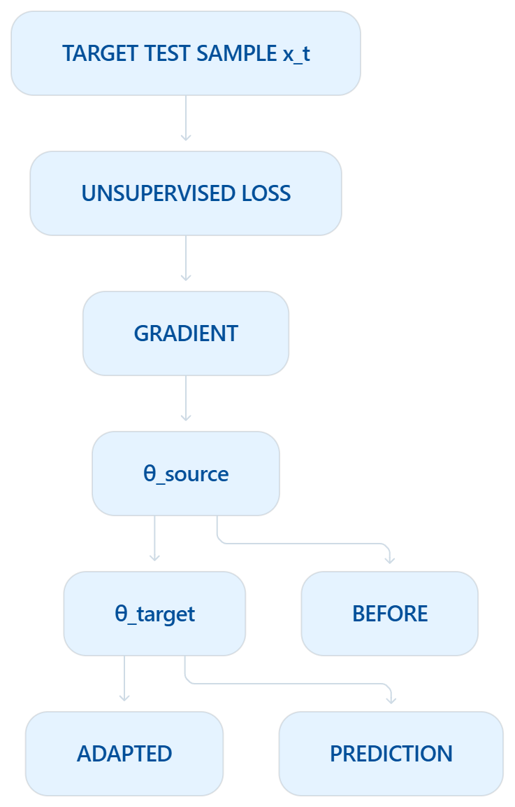
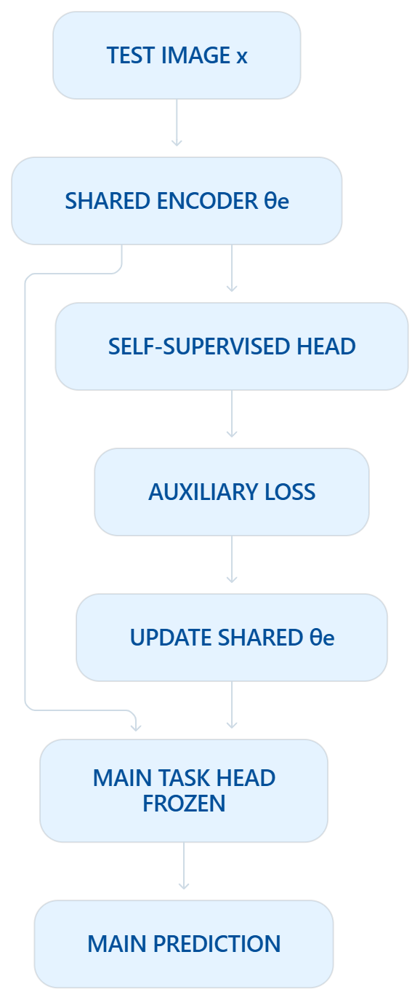
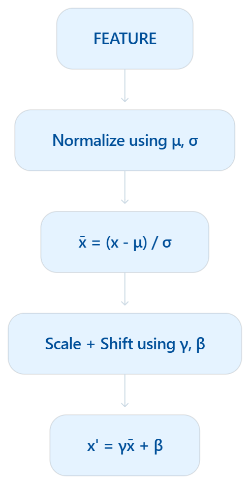
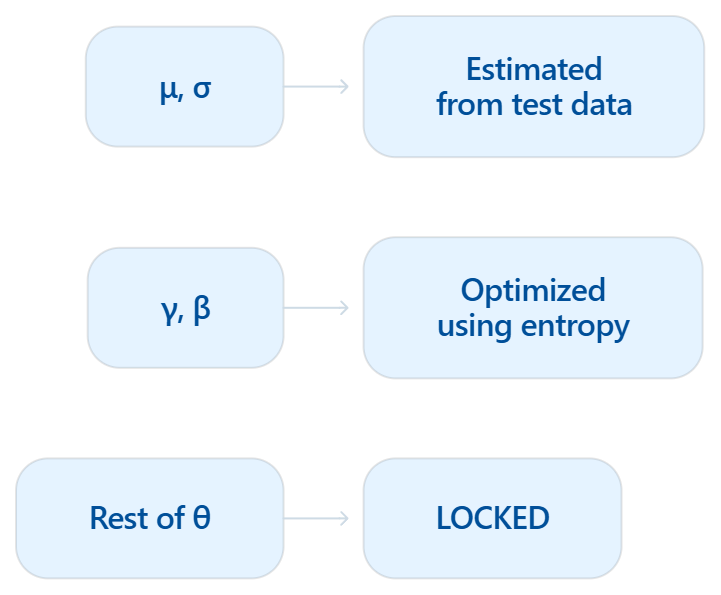
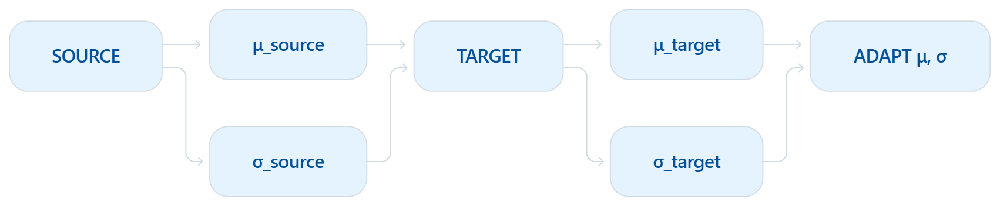
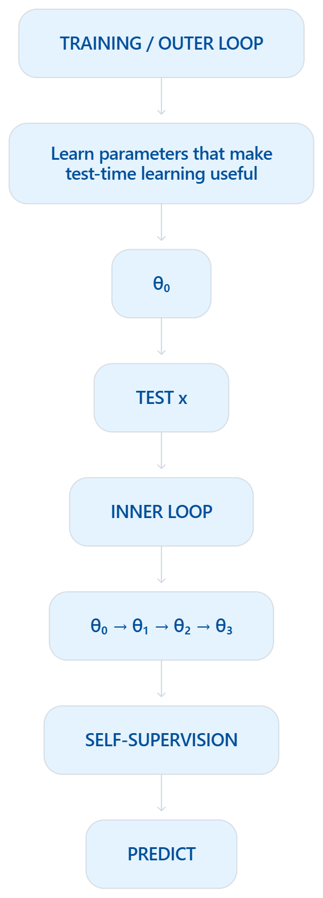
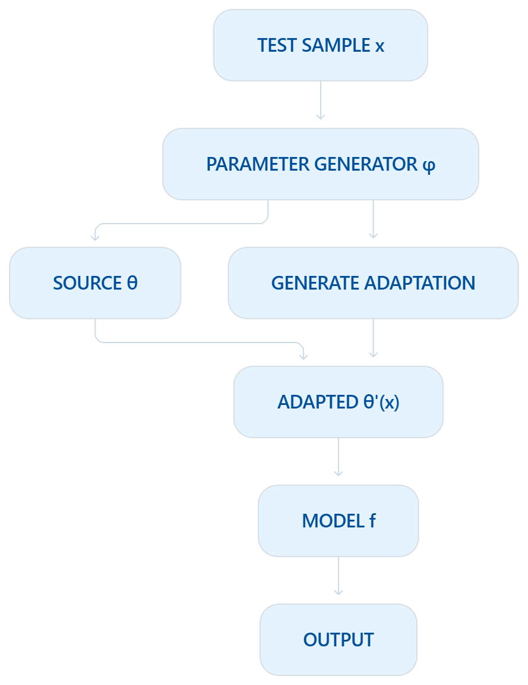
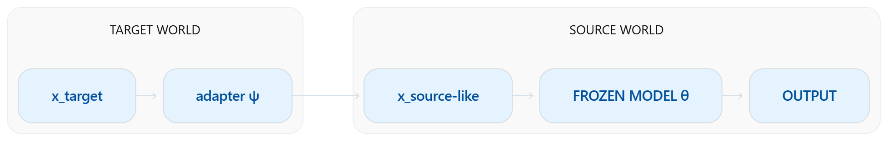
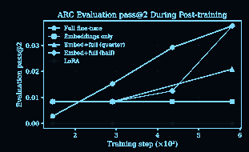

Where should the system spend more computation?
01 / WHAT TO ADAPT
Test-time adaptation does not automatically mean “retrain the model.”
When the deployment environment changes, a system can respond by modifying very different parts of its computation.
It could update model parameters. It could estimate new normalization statistics. It could transform the incoming sample. It could adapt a prompt while keeping weights frozen. Or another mechanism could directly infer temporary parameters for the current input.
So the important question is not:
“Does adaptation happen?”
What is allowed to move?
The choice determines the adaptation's flexibility, memory cost, latency, stability, and risk of damaging previously learned behavior. The survey formalizes this as five main “what to adapt” categories.
Beyond Model Adaptation at Test Time: A Survey — “What to Adapt”

MODEL ADAPTATION

02 / CHANGE THE MACHINERY
The most direct form of adaptation changes the model.
A source-trained model begins with parameters θ.
When target data arrive, an unsupervised or self-supervised test-time objective produces an update, creating parameters better suited to the current distribution.
θ′t = θs − η ∇θ L(xt; θ)
Now the machine performing inference is literally different from the one that entered the test phase.
This gives adaptation high flexibility—but changing a large parameter space also introduces optimization cost, memory overhead, instability, and the possibility of drifting away from useful source knowledge. The survey distinguishes this as model adaptation.
TEST-TIME TRAINING
03 / SELF-SUPERVISED SIGNAL
Learn from the test input without its label.
Test-Time Training with Self-Supervision gives an elegant answer to a hard question: where does the learning signal come from if the answer is unknown?
During training, the network learns two tasks that share an encoder: a main supervised task, and an auxiliary self-supervised task.
At test time, the true class label is unavailable—but the auxiliary task can still produce its own training signal from the test input.
Before making the main prediction, the shared representation is updated using that auxiliary loss. The label is never revealed. The model instead asks the test sample to provide a surrogate learning problem first.
Test → learn something from x → then predict y.

TENT


04 / CHANGE LESS
Adapt the feature modulation, not the whole network.
Tent takes a deliberately constrained approach.
Rather than updating every weight, it minimizes the entropy of test predictions while changing the normalization statistics and channel-wise affine parameters. Most of the trained model remains frozen.
In Tent:
μ and σ adapt how features are normalized.
γ and β adapt how each channel is scaled and shifted.
The learning signal is simply prediction entropy:
H(ŷ) = −Σc pc log pc
The system uses its own uncertainty as an unsupervised signal—no target labels and no source data are required in the fully test-time setting.
Adaptation is not binary. The system can expose only a tiny surface to change.
NORMALIZATION ADAPTATION
05 / MOVE THE REFERENCE STATISTICS
A model can stay fixed while its reference statistics move.
Training data may establish one feature distribution. At deployment, the target data may have a different mean or variance.
Instead of modifying the learned network, normalization adaptation estimates statistics from the new target distribution and uses them during inference.
SOURCEμsource, σsource
becomes
TARGETμtarget, σtarget
θ = LOCKED
This is a much narrower adaptation surface than full weight optimization.
The survey treats normalization adaptation as a separate category because the model parameters can remain fixed while the statistics governing feature normalization change.
Survey — Figure 5 and the normalization-adaptation section.

LEARNING TO ADAPT

06 / LEARN THE UPDATE RULE
What if the model learns how it should learn at test time?
Ordinary test-time adaptation defines an update rule and applies it when test data arrive. Learning to (Learn at Test Time) goes a level higher.
It frames the system as two nested learning processes.
The inner loop learns from an individual test instance through self-supervision before making its prediction.
The outer loop, during training, learns representations and objectives such that those inner-loop updates actually improve the main task.
At deployment, only the inner process is required.
This changes the design question from:
“What test-time loss should we bolt onto the model?”
Can training prepare the model to become a better test-time learner?
This is one of the strongest bridges between Adaptation and Test-Time Architecture.
PARAMETER INFERENCE
07 / GENERATED PARAMETERS
Adapt without running gradient descent.
Instead of taking several gradient steps on the model, an auxiliary mechanism can examine the current test input and directly generate the parameters needed for that input.
θ′t = φ(xt, θs)
followed by:
yt = fθ′t(xt)
The adaptation therefore occurs in a single forward computation rather than through ordinary back-propagation.
This can be more efficient at deployment, although the parameter-generation mechanism generally has to be prepared during training and may generate only a subset of the model's parameters.

SAMPLE ADAPTATION

08 / MOVE THE DATA
Sometimes the machine should not move at all.
If the model performs well on its original source distribution, another option is to transform the incoming test sample toward the representation the model already understands.
Instead of:
change fθ
the system learns or applies:
x′t = ψ(xt)
and then uses the frozen source model:
y = fθ(x′t)
The burden of adaptation moves from the model to the input.
The survey calls this sample adaptation, and notes that generative models are often used to transform target samples toward source-like data.
Survey — Figure 6.
PROMPT ADAPTATION
09 / MOVE THE CONTEXT
For foundation models, the adaptable object can be context itself.
A pretrained model can remain completely frozen while a small set of prompt tokens, embeddings, or textual instructions is modified for the target data.
The learned knowledge stays inside θ. What changes is the information placed around the input.
This gives prompt adaptation an attractive deployment property: the adaptation surface can be dramatically smaller than the model itself, while the underlying pretrained parameters remain intact.
The test-time-adaptation survey treats prompt adaptation as its own category and discusses both continuous embedding-space and textual prompt forms.
TARGET DATA
→
ADAPT
PROMPT / CONTEXT
PROMPT / CONTEXT
→
FROZEN θ
→
OUTPUT
TRM / ADAPTATION BANDWIDTH

10 / HOW MUCH MAY MOVE?
Adaptation has bandwidth.
Even after deciding to adapt model parameters, another question remains:
How much of the model is allowed to move?
At one extreme, adaptation may modify only a small embedding or low-dimensional subspace. At the other, every trainable parameter may update.
Test-time Adaptation of Tiny Recursive Models investigates this tradeoff directly. In its particular TRM/ARC setting, the authors report that full fine-tuning was necessary for their strongest adaptation result, while parameter-efficient alternatives such as embeddings-only and LoRA variants behaved differently.
This is not evidence that full fine-tuning is universally better. It demonstrates the more important architectural point:
The size of the adaptation surface is itself a test-time design choice.
THE DISTINCTION
ADAPTATION IS A CHOICE OF WHAT IS ALLOWED TO MOVE.
Which part of the system may change in response to test data?